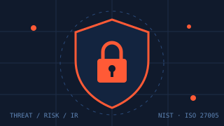
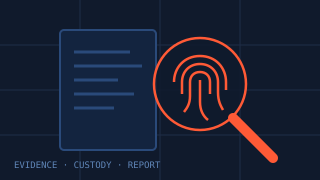
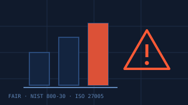
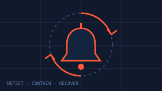
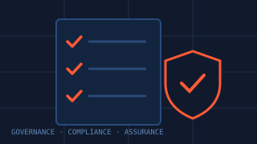
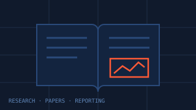
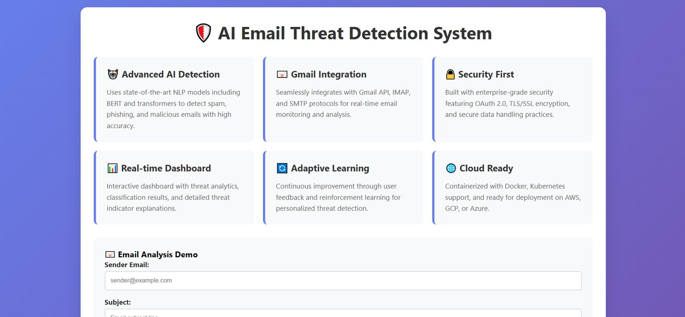
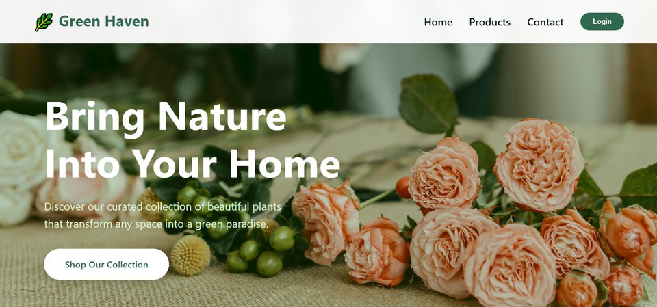
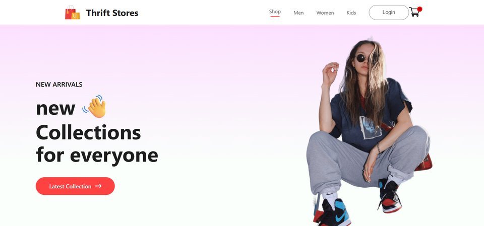

Education
Cybersecurity & Forensics
M.Sc., Bingham University, 2025
Now studying B.Sc. Software Engineering at Miva Open University
Where I study, what I build and where I’m heading.
“Evidence comes before conclusions, and documentation is part of the deliverable.”
Education
M.Sc., Bingham University, 2025
Now studying B.Sc. Software Engineering at Miva Open University
Skills & interests
Beyond the screen
Founding member and media lead of Reach Out Dyslexia, promoting inclusive education in Nigerian schools. Author of a published risk assessment of MTN Nigeria.
B.Sc. Software Engineering, in progress. Focus areas: software architecture, full-stack development, software design, systems engineering and DevOps practices.
M.Sc. Cybersecurity and Forensics, completed 2025. Focus areas: digital forensics, incident management, cybersecurity governance, risk assessment, security architecture and information assurance.
B.Sc. Computer Science, completed 2023.
Google Cybersecurity Professional Certificate and AWS Cloud Practitioner Essentials, both completed.
2021 to 2022. I kept accurate records of laboratory results, followed safety and operating standards and handled confidential information responsibly.
A cybersecurity and digital forensics venture. My aim is to build secure, well-documented technology and offer assessments, risk analysis, forensics, awareness training and infrastructure reviews that organisations can trust and act on.
I want to build secure, innovative software, contribute to research and explain technical work clearly to people who are not specialists. Through ADYN Technologies I want to grow a research-driven cybersecurity and digital forensics consultancy that builds tools, training programmes and assessment frameworks for organisations across Africa and beyond.
| Picture | Skill | Where it shows up | Evidence |
|---|---|---|---|
 | Cybersecurity | Threat detection, incident response, vulnerability assessment and risk modelling (NIST SP 800-30, ISO/IEC 27005, FAIR) | M.Sc. studies, MTN Nigeria risk assessment (PDF), AI Email Threat Detection System (live) · source |
 | Digital forensics | Evidence collection, chain of custody and reporting | M.Sc. Cybersecurity and Forensics |
 | Risk assessment and modelling | Quantitative risk scoring, 18 risk scenarios and an eight-point remediation roadmap (NIST SP 800-30, ISO/IEC 27005, FAIR) | MTN Nigeria risk assessment (PDF) |
 | Incident response and management | Detecting, handling and documenting security incidents | M.Sc. studies |
 | Security governance and compliance | Data protection and compliance practice, security architecture and information assurance | M.Sc. studies |
| Cloud computing | Core AWS cloud concepts, services and security basics | AWS Cloud Practitioner Essentials (completed) | |
 | Research and technical writing | Publishing research and explaining technical work to non-specialists | MTN Nigeria risk assessment (PDF), M.Sc. dissertation work |
 | Python and machine learning | AI-powered email threat detection with NLP (BERT), Flask, Gmail API, OAuth 2.0, a real-time threat dashboard and a reinforcement learning feedback loop | AI Email Threat Detection System (live) · source |
 | Full-stack web development | E-commerce plant shop with a product catalog, shopping cart, authentication and Google Maps store integration, built with HTML, CSS and JavaScript | Green Haven Plant Shop (live) · GitHub |
 | Responsive web development | Product browsing, category filtering and a responsive mobile-first layout with HTML, CSS and JavaScript | Thrift Store Platform (live) |
My published research is a quantitative cybersecurity risk assessment of MTN Nigeria. It applies NIST SP 800-30, ISO/IEC 27005 and FAIR to identify 18 risk scenarios and set out an eight-point remediation roadmap. Read the full paper (PDF).
I am a founding member and media lead of Reach Out Dyslexia, a non-governmental organisation promoting inclusive education and dyslexia awareness in Nigerian schools. I have taken part in more than 20 outreach programmes.
What I enjoy working on and keep learning about.
Hello, I’m Adedoyin, a student at Miva Open University. I’m interested in cybersecurity, software engineering and research. This portfolio shows what I’m learning and building.